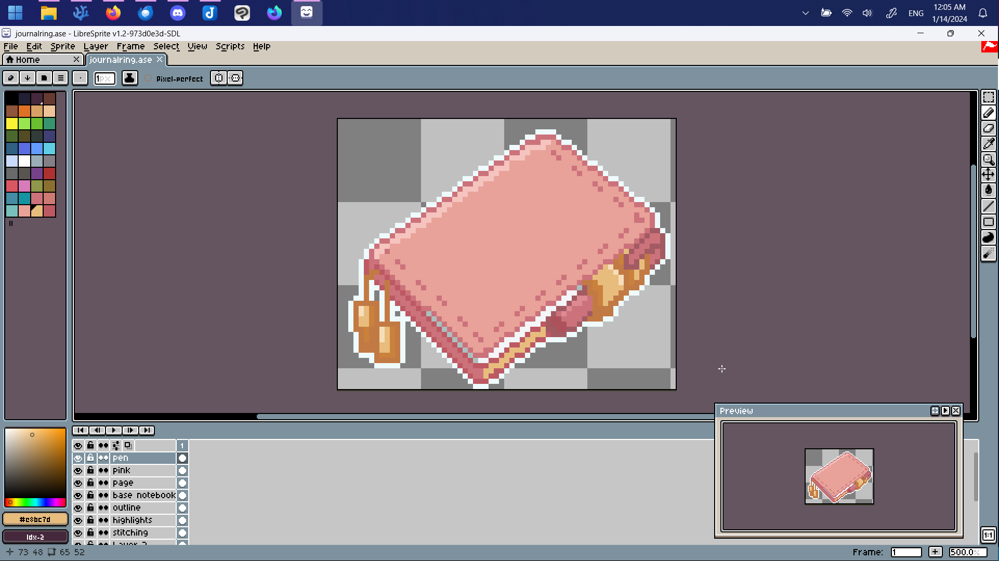

Making a Webring: The Creation of JournalRing
January 13, 2024
Hello, all. In case you haven’t heard yet, I made a webring! I’ve been curious about making one for awhile, but I wasn’t really sure what would interest people (who aren’t me). After asking Hors about her opinion on Hobonichi planners after a long stint as a bullet journaller (alleged), it occurred to me this might be a fun topic to build a webring around. (Despite the fact I still haven’t made my Nexus page that’s dedicated to journals. Which is going to happen eventually. I swear!)

For anyone uninitiated, a webring is a list of people. This list can be loosely organized around whatever you want. Each member of this list puts a snippet of code on their site, which generates a forward and backwards button based on that member’s position within the list. There’s typically a link back to the webring home page, and sometimes also a “Random” button to find new sites on the list. Sounds simple enough, yeah?
Kind of! There are a few considerations, including:
And these can all vary in complexity depending on your needs. For ease of navigation, I’ve split this post into these four sections so you can skip to read more about how JournalRing was created and to see if you might want to make your own webring! I made a lot of mistakes along the way, and I’ll be sure to talk a bit about those so you don’t have to make the same.
I. The webring code
There are a few webring scripts out there if you want to get started immediately. The most popular is probably onionring.js, but there are others, like RainRing and hatring.js. There’s also an interesting no-JS tutorial using Netlify here and another tutorial with a Netlify demo here. Neorings also offers a backend for webrings with a convenient directory.
These all have their own merits, but I thought it’d be best to just make my own. There were a few reasons for this, but it mostly boils down to none of them quite meeting all my needs and also being curious about what it’d be like to build a script on my own. Armed with this CSS tricks article and a dream, I persevered.
There were a few features I was dead-set on implementing:
- I wanted to store members’ data in JSON for legibility and ease of maintenance.
- This JSON list needed to be accessible enough for me to pull it to display the members list, update the member count, and scan the list for dead links.
- Each webring member should receive a single web component and JS link as to not be too verbose.
- The webring should accomodate multiple different styles of widgets without having to create entirely new JS files.
- Naturally, all of this had to be possible with zero back-end.
This resulted in nenring (embedded below), which consists of two JS files – one to create the webring widget and store the membership information (nenring-config.js), and one to display the webring’s information (nenring-admin.js). In other words, one is for webring members, and one is for the admin. The admin will have to host both scripts, but only one of them is something webring members will reference within their take-home code. These files are blank, but I haven’t tested out these blank config files myself. If you want to see how I’ve actually implemented my JS, the notable files are in this folder.
As for how it actually works: A person signs up for my webring with a form. I am emailed when this happens so I can respond quickly. After checking their application and approving them, I add their information to the config.js file. I push this update, which then makes it so the widget will show up on their site. Then, I email them to inform them they’re approved. The admin.js file automatically adds their entry to my “Members” list and updates the Member count. If they ever delete their site, the console log will notify me so they can be removed.
I’ve written a bit about web components in the past. Even though I ended up ditching my web components in favor of a static site generator after all, I still really enjoyed the idea of using web components for something like this. It just felt right–semantic, simple, easy to implement. The take-home code starts with some variation of <journal-ring icon="COLOR"></journal-ring> and then includes a link to the script. It does not get cleaner, in my opinion!
A few things to note:
-
I don’t love injecting the JSON directly into the JS file, but doing so allows you to bypass Cross-origin security policies. Other people on different domains trying to reference a JSON file on your site is a big no-no, it turns out. CORS policies are useful, but when you cannot control the server headers (like if you’re using Neocities) to allow cross-domain sharing, it can be a bit of a pain. The actual meat of this issue is a bit beyond the scope of this post, but you can read more about Cross-origin Request Sharing (CORS) here. There are workarounds, like proxies, but I figured I’d just put the data directly into the JS to avoid any drama.
-
When you serve up your JS for people to take to their own site, you have to make sure the MIME type of the linked script matches the file extension. If you try and hotlink the raw file from Github, this won’t work. This is a feature, not a bug, I was just nearly 11 years late to hear about it. There are workarounds, the best of which is probably using a CDN like jsdelivr. You can also hotlink directly from your own website (which I was doing), but I don’t like how this locks you in to your domain. I’m a lot more likely to leave Neocities than I am to take my site off Github, so I recently (as in, like, yesterday) updated the take home widget to use a CDN link of my Github JS, which is super simple to do on Jsdeliver. If you already put the widget on your site with the hardcoded JS file served with Neocities, don’t worry, it’s probably fine. I don’t plan to leave Neocities anytime in the near future!
-
The nenring template files are intended to be used with a webring that has multiple widget themes that can be assigned a different color to differentiate them. For each different theme, you should have a widget icon link and icon image links for your forward and back buttons. It also is set up to accommodate a structure for a webring that uses name, website title, website url, and site description fields. If any of this is different from your intended usecase, you’ll have to modify the scripts to suit your needs.
-
If you try to automate scanning your JSON list for dead links, you’ll run into those pesky CORS errors again. Although I didn’t want to use a CORS proxy in the take-home JS for everyone, I figured it’s fine to do so in the actual admin file since it’s for your own personal use. I chose allOrigins because…it was the first one that actually worked. It’s possible this tool will become obsolete at some point–if it does, you’ll have to find a new one. I just really didn’t want to have to manually check everyone’s sites to make sure they’re still there.
- If you want to log reachable sites in addition to dead links, you can change:
.then(response => { if (!response.ok) { handleDeadLink(member.url); } })to
.then(response => { if (response.ok) { console.log(`Link is reachable: ${member.url}`); } else { handleDeadLink(member.url); } })I mostly just removed the reachable sites bit with the thought that if someone has hundreds of sites listed, they’ll probably get annoyed pretty quickly. But if you like to see all sites (or even just to check that it works), you can do this.
II. The webring widget
My original plan for JournalRing was to create a Hobonichi widget, a Leuchtturm/Moleskin widget, a Mead widget, a Traveler’s notebook widget, and a spiral bound notebook widget. I even made little doodles of what they were going to look like. I started with the Hobonichi widget, promptly realized how difficult pixel art is, and very rapidly abandoned the thought. Instead, I ended up making different colors for the Hobonichi widget. A stylish compromise if I say so myself.
To this end, I primarily used Libresprite, a free and open source fork of the better known Aseprite.
{kind=link}
I’ve been meaning to make a more in-depth post about Libresprite as part of my FOSS recommendations series. I used it to make my website button and found the experience overall very nice! I haven’t used Aseprite for comparison, but I haven’t found any features lacking in Libresprite that feel like a deal-breaker. That said, I’m pretty much a pixel art n00b, as it were.
Anyways, Libresprite has overlay layers, but I’m so used to Clip Studio Paint’s that I tossed in the pixels there for final processing. Not quite as FOSS, but what can I say. I’m a creature of habit. I tweaked some of the colors to get different shades for the widgets. Once the widget colors were finalized, I made a forward and back button to match. I tried to get away with just using text arrows, but it didn’t have the same pizzazz.
Honestly, in retrospect, I wish I’d made the journal widgets look more like stickers to match the journal thing I have going on. But I have even less experience making stickers than I do making pixel art, so maybe once I have a little more experience. If I ever do update the links to the widget icons in the code, it will end up updating on everyone’s page, which is an unsettling amount of power. Theoretically, you could link it to whatever you wanted, even Sasuke doing a Fortnite dance.
I swear if I ever update the widgets, they will be cute enough to justify it. I think they look fine as is, but I still don’t have much pixel art wisdom to share. Make sure it looks good small!
III. The webring sign-up form
Not much of a webring if it’s just you. You’ll want to set up a form. You cannot do this natively with a static site. But don’t fear…there are bountiful options if you have a static site. You can also use this if you don’t have a static site, but just don’t want to deal with the backend. Up to you!
- Formspree.io: This is what I used for JournalRing, and I was very happy with how simple it is to set up (even if you only get 50 submissions per month on their free tier, which is half of some of the other offerings). I love Formspree because it’s just a backend for form management, which means you can style it however you want, which is a paid feature for many other form builders. Be aware you can’t have file uploads on their free plan (like a site button), but you can have people input a link to files if you want a workaround.
- Netlify: If you use Netlify to deploy your site, you should be aware that it ships with forms! There are limited submissions on their free tier (100 per month), but that’s more than enough for small projects like this (and double what Formspree allows).
- Tally.so: Tally.so is pretty cool and fairly customizable for a form generator. You embed the code of the form into your site, and you can’t just use it as a backend like Jotform (and so there’s more limited customizability). But you can also embed forms with file uploads pretty easily.
- Airtable: I haven’t used Airtable that extensively, so I can’t really speak to its benefits, but I have seen some webrings that are using it. So I know it’s a thing! It honestly looks a little intimidating to me though.
- Google Forms: Note: you cannot embed a Google form if it also has a file upload. That said, it does the trick if you don’t want to sign up anywhere and just want responses delivered to your inbox.
- Jotform: Another popular WYSIWYG form builder, I believe one of the first. You can get 100 submissions per month on their free tier.
Regardless of which of these options you choose, if you use nenring, you’ll either want to stick with the preset fields (name, url, website title, website description, and email for contact) or modify the code to allow for things like a site button.
If you do want to use Formspree, here is basically how I implemented it. You can view the SCSS file for my form styling as well (it’s pretty simple!)
<form action="https://formspree.io/f/{form_id}" method="POST">
<input type="text" id="name" name="name" required placeholder="Name">
<input type="email" id="email" name="email" required placeholder="Email (for contact only)">
<input type="text" id="website_title" name="website_title" required placeholder="Website Title">
<input type="url" id="website_url" name="website_url" required placeholder="Website URL">
<textarea id="description" name="description" rows="4" required placeholder="Website Description"></textarea>
<button type="submit">Submit</button>
</form>
IV. The webring homepage
I thought, hey, wouldn’t it be so cute to make a layout that emulates a journal?! With a highlighter, realistic pages, and journal tabs? So I nabbed a photo of the Dreamy Soda case from the Hobonichi Techo website and threw it into Photoshop to fix up. Then, I hunted down some graph paper to overlay on top of that picture, and voila!
Well, sort of. I still had to do the actual coding part, and I hadn’t thought all that far ahead. I just knew I really wanted to avoid using px with absolute positioning. I have a weird vendetta against px. Not very old-web of me, I know, but I wanted the journal container to behave more responsively, resizing to match the viewport at any size. This ended up being a pretty big challenge because what I fundamentally wanted was to mix responsive styling with non-responsive functioning and to break the zoom function, which was a bit…messy. The sloppy code is most noticeable with the stickers, which I will re-tool to be more code efficient someday. To make things mobile responsive, I just flipped everything 90 degrees to force a psuedo-landscape mode and called it a day (another good idea courtesy of Hors).
I think it looks pretty good on most displays, except for whatever bizarre aspect ratio the Neocities screenshot tool uses to capture website updates. It looks like an atypical tablet-esque size? Whatever, it looks fine once I open it on most displays, which is good enough for me!
{kind=link}
You can look at the SCSS folder on Github. If that’s too confusing, just know it can be broken down by the main SCSS, and then the extra SCSS snippets which can be found here. Fun fact: the body font has to use vw (view width) units to make any of this work.
I initially set up my first spread with CSS page counters, but after implementing the journal tabs, I realized that they wouldn’t count properly. Fundamentally, all the content on the JournalRing homepage is contained within one HTML file, specific sections for the left and right pages are just conditionally displayed or hidden depending on which tab is selected. Which confuses CSS counters. So I ended up just appending a page number to the headers with Javascript.
I also wanted my “Members” list to resemble an address book, with pre-printed boxes to fill in. This was a little more complex than I expected because I separated the “left” and “right” pages (meaning that I had to define how many placeholder boxes should be there per page). Also, once there are more than 10 entries, there’ll be previous and next buttons under the 10th entry, but I thought it’d look strange to have them before then. Just generally a lot more JS logic than I’d been anticipating!
Because of how the journalring display script was developed, I ended up having to later extract the relevant script for people-who-aren’t-me and turn it into the nenring-admin.js script. You can find the full layout js, including how I pulled the data from the other file, here.
A big thing I discovered while attempting to access the membership data contained in the journalring.js file is that you should load both scripts on the same page, and you must load the file containing the members first. Additionally, you have to attach the JSON list to the window object. This works because if both JS files are used on the same page, they can both access the window object. So if you attach the JSON list to a window object and then load it alongside a script meant to pull that data, that other script can call it with something like window.membersData; This is outlined within the nenring code comments, but it was important enough that I think it deserves its own paragraph.
Conclusion
This was fun despite it all! I walked into the project expecting it to be difficult, but I wasn’t expecting some of the roadblocks I hit along the way. I appreciate everyone’s patience as I discovered crazy things about raw Github file MIME types, CORS errors, and window objects. I wanted to make sure things got ironed out before I released this blog post, but I still haven’t done a fresh test of nenring, so use at your discretion and please do report any weirdness. I also don’t know how clear this post is, apologies. I haven’t proofread it all that much, and it was kind of written in one go. So if you have any questions, you’re free to comment or email me. I hope I didn’t leave anything too big out.
I think webrings are one of the most fun aspects of the “smallweb,” so I highly encourage more people to make webrings. I’m already thinking of making more…a yume webring would be fun, or maybe a shoujo one, or a marine biology one…who knows! Leave suggestions if you want, or go ahead and get started making your own. Good luck!